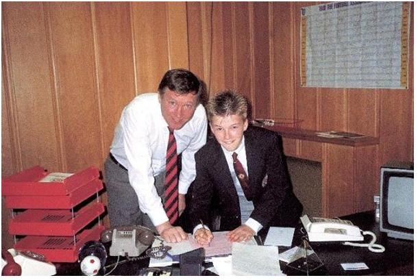

Chương Hai

ột tối nọ, năm cậu lên 10, David Beckham từ công viên chạy hộc tốc về nhà, hớn hở gọi cha: “Bố ơi bố! Có ông nào ấy đang muốn mời con tham gia CLB của ổng!”
Ông nào là ông nào? Hay là một thằng…mẹ mìn? Ted nghĩ thoáng trong đầu như thế, nhưng rồi ông quyết định tìm hiểu thêm về nhân vật bí ẩn kia. Hóa ra đó là Stuart Underwood, cựu thành viên CLB nghiệp dư Walthamstow Avenue, người đang chiêu mộ cầu thủ nhí để thành lập một đội bóng thiếu nhi địa phương mang tên Ridgeway Rovers. Ngày nay, Underwood được ghi công là huấn luyện viên (HLV) đầu tiên đã “phát hiện” ra Beckham.
Không những cho phép David gia nhập Ridgeway Rovers, Ted còn đề nghị Underwood cho mình tham gia huấn luyện CLB. Từ đó trở đi, ông bỏ hẳn chơi bóng ở Kingfisher, tập trung rèn giũa David, và cùng Underwood dạy dỗ bọn trẻ tại Ridgeway. Về phần David, cậu sẽ khoác áo Ridgeway cho đến tận năm 16 tuổi, đồng thời chơi cùng một số đội bóng khác nữa, trước là đội tiểu học Chase Lane và đội nhà thờ địa phương, sau là đội trung học Chingford[3], hội tuyển quận Waltham Forest, và hội tuyển địa hạt Essex. Trong màu áo Essex, David từng được sang Mỹ thi đấu giao hữu.

Beckham giành chức vô địch trong màu áo Ridgeway Rovers (Ảnh: Celebritiestan)
Underwood điều hành Ridgeway Rovers một cách rất quy củ và chuyên nghiệp. Chỉ là một đội bóng thiếu nhi, mà cuối mỗi mùa bóng cũng có trao giải nội bộ đàng hoàng: Từ giải thưởng cầu thủ xuất sắc do HLV chọn, giải cầu thủ xuất sắc do cầu thủ tự bầu, đến giải người tiến bộ nhất trong năm. Với tiền đóng góp từ các bậc phụ huynh, ông còn tổ chức cho đội đi du đấu tại Hà Lan và Đức. So với các CLB thiếu nhi lân cận, Ridgeway có trình độ cao hơn hẳn. Đội thường xuyên thắng trận với những tỷ số 9-0, 10-0, giành được nhiều cúp địa phương, có lần lập kỷ lục đá 92 trận liền bất bại. Trong thời gian chơi cho Ridgeway, David ghi tới hàng trăm bàn thắng. Đối với cậu, mỗi trận với Ridgeway không khác gì trận cầu đỉnh cao tại giải vô địch quốc gia (VĐQG) Anh. Nếu lịch đi nghỉ của gia đình trùng với lịch thi đấu của đội bóng, cậu nhất quyết đòi đổi ngày đi chơi, hoặc xin được ở nhà một mình để đá banh!
Tuy tận tụy rèn luyện con trai, Ted hiểu rõ cả ông lẫn Underwood đều chỉ là những “tay chơi nửa mùa”, trình độ cũng như kiến thức đều giới hạn. Vậy nên, hễ có khóa dạy bóng đá chính qui nào coi được, ông đều cho David đi học ngay. David theo học nhiều khóa tại trường của Roger Morgan, cựu tiền vệ Tottenham. Đến kỳ nghỉ hè, cậu được lên Manchester học trường của huyền thoại Bobby Charlton. Học phí trường này rất đắt, ông bà Beckham không xoay đủ để trả, may nhờ ông ngoại ứng giúp ra cho. Trong khóa thứ hai tại Manchester, năm 1986, David chiến thắng trong cuộc thi kỹ năng, được đích thân Charlton trao bằng khen, và được thưởng một chuyến tập huấn 2 tuần ở Camp Nou, Barcelona.
Barcelona lúc bấy giờ sở hữu những ngôi sao như Mark Hughes và Gary Lineker, được dẫn dắt bởi HLV Terry Venables. Mark Hughes chính là một trong hai thần tượng của David, nên chuyến đi Tây Ban Nha với cậu đẹp như một giấc mơ. David choáng ngợp trước cơ sở vật chất của đội bóng xứ Catalonia. Sân Camp Nou đẹp và hoành tráng như thánh đường đã đành, nhưng ngay cả đội dự bị Barcelona cũng có hẳn một cầu trường riêng sức chứa đến 20 000 khán giả thì thật quá sức tưởng tượng.Tuy nhiên, ngay khi đang sống trong mơ, David cũng không quên nhiệm vụ: Cuối tuần đầu tiên cậu ở Barcelona, Ridgeway Rovers sẽ phải ra sân trong trận chung kết tranh một cúp địa phương với Forest United tại White Hart Lane. Trận bình thường với Ridgeway, David còn không bỏ, huống chi chung kết. Cậu đáp máy bay về chơi cho Ridgeway, rồi xong trận lại bay ngược ngay sang Tây Ban Nha, chi phí tiền vé do ông ngoại đài thọ. Tỷ số trận chung kết là: Ridgewat thua 1 - 2, song điều quan trọng là David không phải cắn rứt trong lòng vì đã bỏ quên nghĩa vụ.
Dù thú vị và bổ ích, những chuyến tập huấn tại Barcelona và Manchester đều chỉ mang tính ngắn ngày. Ted Beckham muốn hơn thế nữa, ông muốn con trai được đào tạo thường trực trong một môi trường chính qui. Dĩ nhiên, theo học với United là lý tưởng nhất, khổ nỗi David còn quá bé, không thể ở Manchester một mình, mà ông lẫn vợ không ai có thể bỏ công việc để lên đó chăm con. Như vậy chỉ còn có cách ghi danh tại một CLB London. Rốt cuộc, David xin vào học trường đào tạo cầu thủ trẻ của Tottenham. Đồng lứa với cậu ở trường có Sol Campbell và Nick Barmby, sau này đều trở thành tuyển thủ quốc gia Anh. Tuy tập cùng Spurs, mỗi ngày đi học, David đều mặc chiếc áo đỏ United. Vì chiếc áo đó mà David bị đồng đội liên tục chế giễu, thậm chí cho ăn đòn. Song le, chế thì mặc chế, đòn thì mặc đòn, cậu nhất quyết trung thành cùng sắc đỏ.
Ở trường, David tiến bộ từng ngày, được đánh giá cao hơn cả những đàn anh hơn mình 4 – 5 tuổi. Vậy mà trong lòng cậu lúc nào cũng canh cánh một nỗi lo: Chẳng lẽ mình sẽ khoác áo Tottenham? Mình từng được trường Bobby Charlton trao giải thật đấy, nhưng trường đó không phải Manchester United. United đã có sẵn biết bao cầu thủ năng khiếu, liệu họ có bao giờ để mắt đến một người ở tận London?
David đã lo âu thái quá, bởi từ khi Alex Ferguson lên nắm quyền tại Old Trafford, ông xây dựng một mạng lưới tuyển trạch viên bủa khắp nước Anh, trong số đó có Malcolm Fidgeon, tuyển trạch viên phụ trách khu vực London. David không hề biết Fidgeon đã để ý theo dõi cậu từ lâu. Sau trận đấu giữa hai đội thiếu nhi Waltham Forest và Redbridge năm 1986, Fidgeon quyết định tiếp cận bà Sandra, xin phép bà cho David lên Manchester tập một tuần, để các HLV United đánh giá khả năng của cậu. Bà Sandra mừng đến không nói nên lời, ngay lập tức chạy đến chỗ con trai:
-Ôi con ơi! May mà trận vừa rồi con đá tốt đấy!
-Sao vậy mẹ?
-Cái ông đứng kia là người của Manchester United. Họ đang muốn mời con lên Man thử tài!
David nhảy cẫng lên, rồi bật khóc vì hạnh phúc. “Giấc mơ của con”, cậu nức nở, “khao khát của con”.
Tối đó, Fidgeon đến tận nhà David để bàn chuyện cùng ông bà Beckham:
-Cậu nhà có đủ những kỹ năng chúng tôi đang tìm kiếm. Rất có năng khiếu, mà lại biết giữ kỷ luật nữa. Chỉ hiềm một nỗi là cậu ấy còn bé nhỏ quá, nhưng không sao, sau này sẽ lớn lên thôi. Nếu ông bà cho phép, tôi sẽ chở cậu ấy lên Manchester. Trong thời gian ở Man thì ông bà chớ lo, tôi sẽ chăm sóc cho cậu hết lòng.
Còn gì mà cho phép với không, David lẫn cha mẹ đều như lâng lâng trên chín tầng mây. Đợt lên Manchester lần đó, David trổ hết sức mình, hòng gây ấn tượng với các HLV. Song United làm việc vô cùng kỹ lưỡng, họ chưa vội đánh giá ngay, mà để David ra về, sau đó mời cậu tới thêm 2,3 lần nữa để xem xét cho thật chính xác.
Khoảng tháng 9 năm 1987, nhằm tối thứ sáu, ông Ted vừa đi làm về, bà Sandra bỗng hớt hải chạy ra:
-Anh tin nổi không? Em mới nhận được điện thoại. Chính Alex Ferguson gọi!
-Alex Ferguson? Ông ấy nói gì?
-Em không nghe được mấy. Ổng nói giọng Scotland nặng quá, chả hiểu gì. Đại khái là ổng khen con mình, và hỏi thăm mình vậy thôi.
Vài tuần trôi qua, đến lượt Fidgeon gọi, mời gia đình Beckham lên Manchester dùng bữa tối với Sir Alex Ferguson, sau đó cùng dự khán trận đấu với West Ham tại Upton Park. Bữa tối hóa ra không chỉ có mình Sir Alex, mà đủ mặt các vị giám đốc và thành viên ban huấn luyện United. Trận gặp West Ham thì là kỷ niệm khó quên trong đời David, khi suốt 90 phút, cậu được ngồi cạnh Sir Alex, ngay trên băng ghế huấn luyện.
Trong lần gặp gỡ kế tiếp, David dùng bữa cùng Sir Alex và toàn thể các cầu thủ trong đội hình một Quỷ Đỏ. Manchester United tặng David chiếc áo khoác. Để đáp lễ, cậu cũng tặng lại Sir Alex một chiếc bút. Sir cầm món quà nhỏ, mỉm cười:
-Cám ơn, David. Con biết gì không? Mai đây, ta sẽ dùng chính cây bút này để ký hợp đồng với con.
David chợt thấy chạnh lòng. Giữa cậu và United đã có mối liên hệ chính thức nào đâu, mà Sir Alex chân tình đến vậy! Trong khi đó, dẫu cậu đang là học viên trường đào tạo của Tottenham, HLV trưởng Spurs, ông David Pleat, lại chẳng hề biết David Beckham là đứa cha căng chú kiết nào! Hôm HLV đội trẻ John Moncur dẫn David đến giới thiệu cùng Pleat, Pleat chỉ liếc qua, xoa đầu cậu “Bé quá, phải lớn thêm tý nữa đã”, rồi bỏ đi một nước.
Pleat không để ý, nhưng Moncur thì nhìn ra tài năng David. Ông còn biết không những Manchester United, mà nhiều CLB khác như Leyton Orient, West Ham, Arsenal, Wimbledon và Nottingham Forest cũng đang dòm ngó cậu. Do vậy, ông ra sức thuyết phục Terry Venables, người kế nhiệm Pleat, ký hợp đồng trói chân David. Venables đồng ý gặp Beckham, và Tottenham mời chào cậu một hợp đồng 6 năm: 2 năm học việc, 2 năm tập sự, theo sau bằng 2 năm chuyên nghiệp.
Buổi hội ngộ Venables, tuy thế, khiến David vô cùng thất vọng, vì ông chẳng nhớ cậu là ai. Các vị HLV trưởng đều như thế cả. Pleat không biết David, Venables thì vừa gặp cậu ở Barcelona gần đây cũng đã vội quên. Chỉ có Alex Ferguson là khác biệt, không những thân tình với cậu, mà còn biết cả cha mẹ, chị em cậu nữa. Chẳng có gì phải lựa chọn ở đây. Trái tim David nghiêng hoàn toàn về Manchester và Sir Alex, cậu muốn bảo thẳng với Venables “Cháu không muốn chơi cho Tottenham”, chỉ vì phép lịch sự nên phải cố kìm.
Đến đây, sự việc rắc rối, vì ông Ted lại suy nghĩ khác. Hâm mộ United cuồng nhiệt tới đâu, ông cũng vẫn là con người thực tế. Từ nhà ra đến White Hart Lane chỉ mất 15 phút, đá cho Tottenham chẳng phải tiện lợi hơn nhiều sao? Thêm nữa, sáu năm là bản hợp đồng rất rộng rãi, không dễ gì có được. Giữa lúc David hướng về Old Trafford một cách vô điều kiện, ông Ted khuyên nhủ con: Chỉ nên đến với United, nếu Quỷ Đỏ cũng chịu đáp ứng một hợp đồng 6 năm giống như Spurs.
-Không bố ơi – David lắc đầu – Con chỉ muốn United!
-Nghe này, David, con phải kiếm được bản hợp đồng 6 năm. Tiền lương không thành vấn đề, thấp hơn cũng không sao, nhưng hợp đồng phải đủ dài để bảo đảm cho mình về tương lai, hiểu không?
Rốt cuộc, hai cha con không phải xung đột nhau, bởi United sẵn sàng mời chào hợp đồng 6 năm. Ngày 2 tháng 5, năm 1989, đúng sinh nhật 14 tuổi của David, Sir Alex Ferguson dùng chính cây bút được tặng ngày nào để ký hợp đồng, đón nhận cậu vào đại gia đình Manchester.
Giấc mơ đã trở thành hiện thực!

Beckham, 14 tuổi, ký hợp đồng với Manchester United. Bên cạnh là HLV Alex Ferguson (Ảnh: Yahoosports)